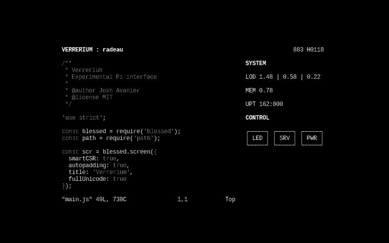
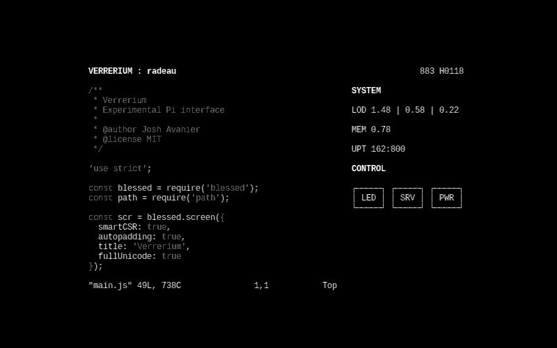

9X1–1H2 · 6.88 · 4.54V · 2.34D
Verrerium was an experimental Pi interface built with Node.js and Blessed, serving as a via-SSH GUI for Holly.
Verrerium was an experimental Pi interface built with Node.js and Blessed, serving as a via-SSH GUI for Holly.
